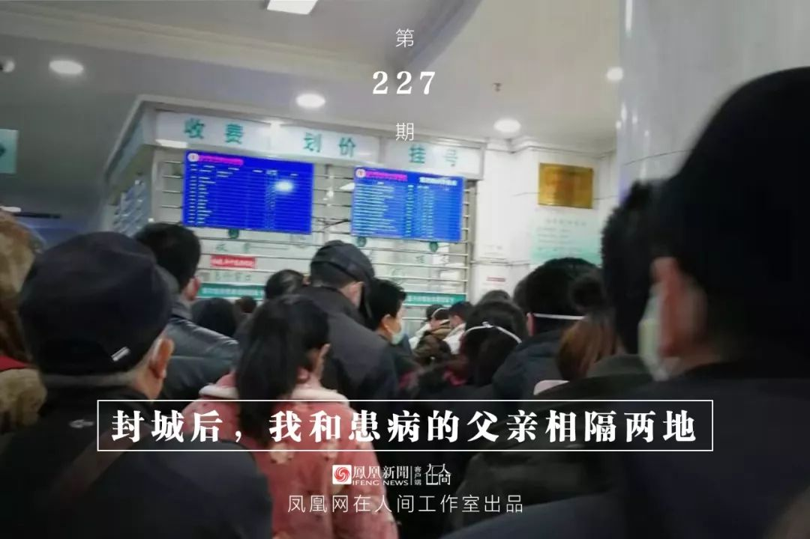
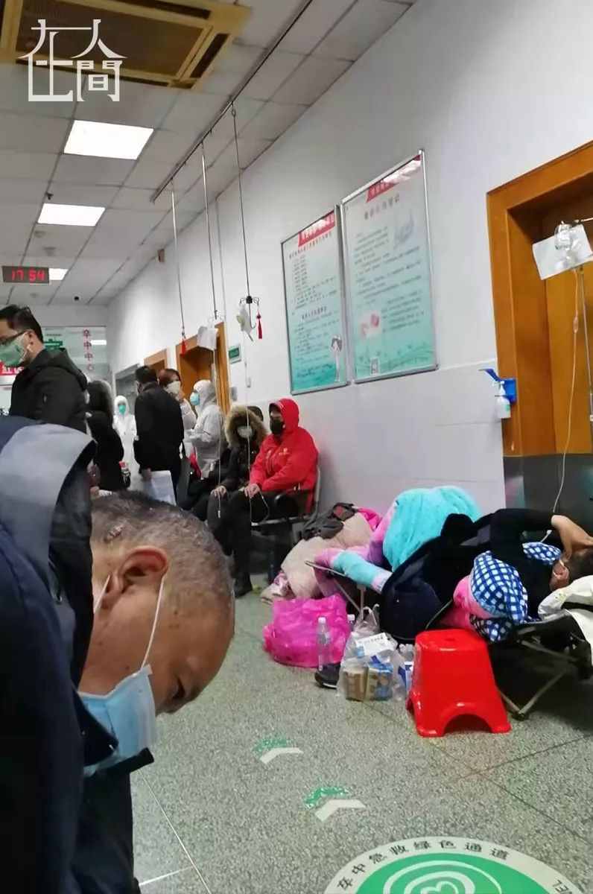
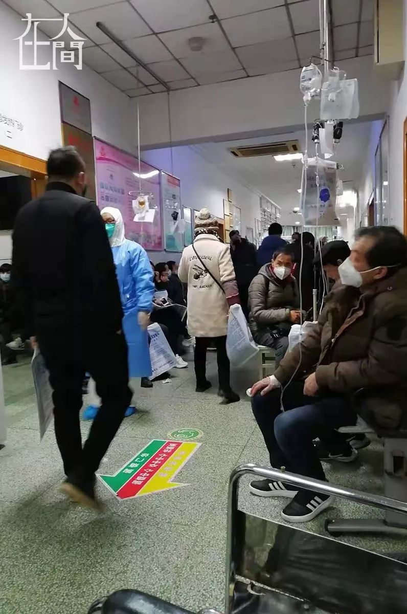
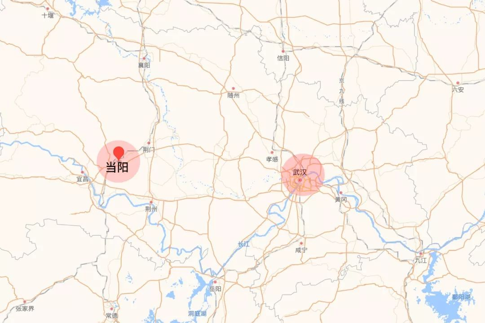
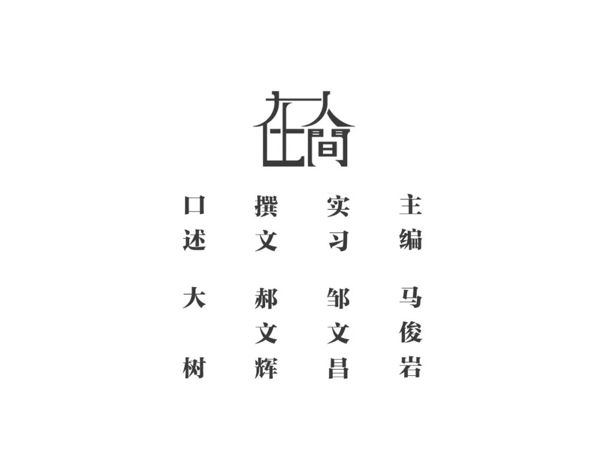

地球青年丨武汉的除夕夜，我一个人在家自行观察
原文链接 备份链接 以下文章来源于地球青年图鉴 ，作者地青 “此刻的中国版图中，武汉好像是一座孤城，但实际上在这座孤城之内还有无数个孤城，有成千上万个原驻家庭把自己锁在家里，他们表面上安静祥和，心头却有一根线紧绷着。”受访者张恒写道。 …


我是一名在武汉工作的普通高校教师，爸妈也在武汉工作。在1月23日之前，我从没想过今年家里会遇到这样的灾难。这几天，是我人生三十余年最难熬的时间。本来应该欢喜迎春，却不料因为疫情的扩展，在武汉和老家湖北当阳相继封城后，我和患病的家人两地分隔。
没有公交车，
妈妈借三轮车把爸爸推进医院
1月14日左右，听妈妈说爸爸有点儿感冒，拖了两天去武汉市第十一医院检查，发现肺部有些阴影，但因为各项指标都是正常的，医生也没说什么。他们俩也没当回事，就回家了，当感冒静养。
爸妈已经买好了1月24日回老家当阳过年的车票，商量之后，我先于1月20日回到老家，照顾爷爷奶奶，准备过年的相关事宜，等爸妈年三十这天再一起团聚。然而连续几天下来，情况迅速恶化，武汉医院里的资源不够用了。我爸每天发烧，却无法在医院确诊是否是新型肺炎，更没办法住院治疗。妈妈每天在医院排号，一站就是大半天，两人从上午一大早挨到下午才能轮上打一针。


■ 父亲在医院。
1月23号，武汉宣布封城，全城公交停运。从家到医院，平时仅仅两三公里的路程，成了难题。爸爸由于过度虚弱，已经没办法走路去医院了。叫不到车。我们甚至打遍了120、110和119，要么长时间占线，要么因为没有防护装备不敢接送。无奈之下，我妈从附近借了一辆三轮车，把爸爸扶上去躺着，自己再推着车走到医院去，排队给爸爸打针。
妈妈冒着被感染的风险，每天焦急地在医院门口排队，在老家的我，却只能心急如焚，抛开所谓的脸面，向所有的亲友、领导求助。夜深时，心里无法平静，担心妈妈被感染，担心爸爸不能继续坚持下去。每敲一行字，三十多岁的我都忍不住流下难过的泪水，只恨平时陪他们太少，自以为是太多。
爸爸说：
“医院里环境太差，我自己很害怕。”
1月24日上午，我爸在医院拿到了入院单，但是没有床位，仍然无法入住。医院过道里，人挨着人。不到10分钟的时间，一位35岁的戴着氧气罩的年轻人倒地不起，就在我爸脚下。在排队的大半天时间里，他看到了3个人从靠墙坐着，变成了躺着、趴着，然后被医务人员抬走。
考虑到严重交叉感染的可能性，妈妈当晚又用三轮车把爸爸带回了家里。家里面基本上给爸爸的病进行了“确诊”。我们知道没有什么直接特效药能迅速治疗他的病，只希望能通过我们自己的力量撑下去。我爸今年57岁，在医院看到那些景象后，他说：“医院里环境太差，我自己很害怕。”

■ 在医院打针的人们。
每天的打针仍然坚持进行，妈妈也试图弄两副中药缓解爸爸的情况。1月25日，在朋友的帮助下，我拿到了一份有助于缓解爸爸症状的中药方。但是没人愿意去药房抓药，更不会有人把药送到家里来。最后表哥决定帮忙去抓药，他本想让快递送到家里来，却没想到连快递都无法叫出来了。表哥一家五口人，因为去药房抓药的事，他和嫂子大吵了一架。考虑到亲人的感受，我让表哥把药放到路边，或者车站旁的垃圾桶上，再让我妈自己去拿。最后，我妈骑车到那边的小区保安值班室，才拿到了那两副药。
那几天，我妈只戴着普通的医用口罩，连市面上的N95口罩都买不到。家里有人从网上看到消息，说有条件的人能买到注射的免疫球蛋白，一针将近600块钱。我查了一下，那个药医院没有，必须自己买。哪怕从黑市上买到了，也需要即开即用、冷藏保存，我爸妈这种情况，根本无法操作。
爸爸双肺感染严重，但一床难求
1月26日，妈妈带爸爸去医院拍了片子，显示双肺感染严重。
我们看到现在很多支援物资都在往武汉走，还在修建火神山、雷神山医院。但那也是好几天以后的事情。我现在已经不做指望。就算修好了，这么多人能一下子住进去么？我觉得不管是否确诊，目前感染的人数，已经远远超过了预期。即使能够住进去，也需要有人一对一照顾吧。我爸妈又没有交通工具，一个病人、一个家属，怎么住、怎么吃、配套问题怎么办？我真的很害怕，不知道下一步怎么办。
现在妈妈每天都在家里做饭，没时间买菜的时候就煮一些粥，强喂给爸爸吃。他必须要吃东西，免疫力才不会持续掉下去。我意识到，我们已经在试图自救了。
回到当阳老家之后的这个年，变得冷冷清清。所有返乡的人，都窝在家里“自我隔离”。空荡荡的大街像一座“鬼城”，更没人有心情去看春节联欢晚会。大年三十那个晚上，家里只有爷爷奶奶和表弟一家三口。我们围着火炉坐着，开着电视只是为了让空荡荡的房间里稍微有点氛围。眼睛盯着手机不断刷出新疫情，耳朵里却跑进来喜气洋洋的节目声音，心里就乱到不行。电视里，网络上很多“武汉加油”、“湖北人民挺住”的话，可是我们挺住也是需要条件的啊，东西没有、药没有，妈妈那边口罩都买不到，床位更是别提了。
爷爷奶奶给爸妈打了电话，我爸没办法多说话，都是妈妈在接听。老人说了几句便开始哽咽，我们却只能在边上安慰他们。调整好爷爷奶奶的情绪，我再拨通电话，跟我妈说，你自己一定要注意，你千万不能倒下。她说会注意的。我妈的精神状态，至少还是积极的。而这个时候，我自己心里的真实感受，那种崩溃和绝望，绝不能传递给我妈，她承受的东西太多了。如果她也倒下了，他们俩，就没有希望了。
我们家一定要挺过去
有不少朋友看到我的状态，都想方设法来帮助我们家。很多朋友发了红包，但是即使拿着钱，我也没办法做任何事情帮助我爸妈。我们是在挺住，都已经在想方设法自救了，没有别的办法了。
在老家，我自己没有遇到被人排斥的情况。表弟一家也顶多是被亲戚打电话告知不再拜年、串门一类的事儿。但是我在网上看到很多武汉人返乡过年，被人称为“逃离武汉”，也有人在网上说我们这些在武汉工作的，这时候回到家乡都是“祸害“，尤其是湖北省外的这些说法，让人听了心里面很不是滋味。我们是无心的。如果我知道情况到今天这一步，我为什么不和父母待在一起，尽我所能，让他们不用独自面对？我如今能做的，却只是把自己也隔离在老家的屋子里观察，画地为牢。

大年初一，当阳市也全面封城了。我跟父母被隔离在距离三百多公里的两个城市里。我在网上看到，道路被石块泥土堵住，心里的路也一下窄了很多。我一度怀疑，这是否为“被放弃”的征兆，我也确认，这是解决问题的方式。
2008年汶川地震的时候，我们全家都捐款相救，玉树地震的时候，我自己奔赴前线去做了志愿者。如果有因果，我们家这次，一定要挺过去。



新型肺炎疫情牵动人心，
《在人间》现面向全国网友征稿：
疫区影像日记
如果你身处疫区
请你用照片（视频）和文字记录
你所听闻和见到的一切
照片不少于3张
文字不少于300字
投稿方式：微信联系人间君（zairenjianliving）

原文链接 备份链接 以下文章来源于地球青年图鉴 ，作者地青 “此刻的中国版图中，武汉好像是一座孤城，但实际上在这座孤城之内还有无数个孤城，有成千上万个原驻家庭把自己锁在家里，他们表面上安静祥和，心头却有一根线紧绷着。”受访者张恒写道。 …
原文链接 备份链接 封城第三天，小雨连绵，潮湿阴冷。这两天都没出门，通知跨江交通封停，汉口汉阳和武昌开始隔离，分开管控，早上站在窗边，十五分钟，路上没有一辆轿车，像以前举办马拉松实行交通管控，全程封路，中途驶过一个蓝衣外卖员，看着像饿了么 …
原文链接 备份链接 要不要在今天发这篇稿子，我们其实很犹豫。这是一个看了会心碎的故事。今天毕竟是大年三十，是一年以来真正可以卸下疲惫，沉浸在亲人相聚快乐里的时刻。 可是怎么说呢？SARS过去17年了，也许对很多人来说那是一场遥远淡漠的记 …
原文链接 备份链接 几位口罩行业的从业者，都是在大量微信、电话疯狂轰炸的间歇，接受我们采访的。所有人的语速都异常急促——在过去的一周时间内，他们接过工信部、各地应急办、市级政府的电话；也接过各省医院、药店、大小代理商的电话；还有从未打过交 …
原文链接 备份链接 今天是“武汉日常”每日书的第四篇，在孝感的学生写到当地村民自发拦路封村，尽管道路后面的横幅还写着他们希望并且欢迎在外乡亲回家；有在黄石的编剧路过黄石最繁华的步行街，发现那里几乎没有任何动静；有居住在武汉市区自愿帮助陌生 …